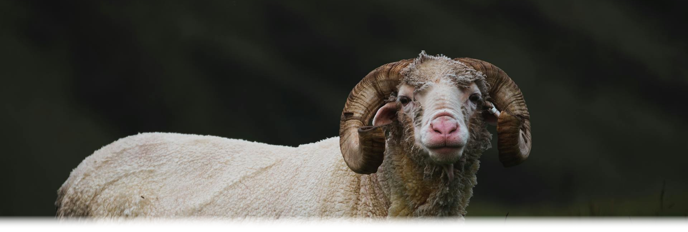

Horns are structures which are permanently attached to the frontal bones of the skull, and are made of two components: a bone core, and a hard keratinous sheath which extends beyond the internal bone projection [2 , 5, 6]. Horns continues to grow over the course of an animal's life, although their size and quality may be influenced by different factors. They can be found in all Bovid species, usually in males, who have thicker and more complex horns. In some genera, females can present horns, though they are smaller in size and curvature [2]. The shape, length and microstructure of horns also varies depending on the species[5].

Horns
By Capra sibirica
May 13, 2024
Development
While there is no ossification prior to the animal's birth, the primitive horn bud develops early during gestation and, as time passes, epidermis develops vacuolated keratinocytes [5].
Once the animal is born, protrusions start to form above the frontal bone. Later, the primitive cores will develop. Initially, those cores are not attached to the frontal bone, but they eventually fuse together. Afterwrds, the cores begin to grow upwards and ossify, while the epidermis becomes keratinized, a process which continues throughout the animals' life [5].
Pneumatization - a process where the frontal sinus enters the base of the bony core - starts at around 6 months of age, and causes the base of the core bone to become spongy [5].

Structure
Horns consist of permanent structures which are attached to the frontal bones of the skull [2]. They are made of a bony projection which is covered by epidermis, and that tissue in turn produces the keratin sheath, which is never shed [6].
In species where pneumatization can be observed, a gradient in porosity can be observed along the horn. This gives higher mechanical resistance to the base of the horn, and allows the dissipation of forces that are inflicted during ramming. The horns are also able to absorb and transfer the inflicted force from the keratinous layers to a layer of fluid between the sheath and the core bone. That force is then transfered to the frontal sinus, and then to the neck and shoulder bones and muscles. This makes the horn a powerful shock-resistant structure [5].
Another interesting aspect of the horn structure is the vascularization of the core bone. It supplies the keratinized layer, allowing it to grow throughout the animal's life [5].

Function
Male bovids often use their horns in combat and as a display of social dominance. However, these structures can also be used when foraging, or as a defense against predators. On the other hand, females mostly use their horns for defense - whether is to protect themselves or their young against predators [5].
The vasculature in the bony core can also allow heat loss, which means that the horns can also affect thermoregulation. In this context, it is worth noting that in species that live in colder places the area of the core bone is smaller when compared to those that inhabit warm regions [5].

Cool Facts Fast Facts
Polled Animals
Polled individuals or breeds refer to those that do not develop horns or horn-like protrusions [5]. This condition is determined by a gene which has two forms (alleles), and the one responsible for the polled characteristic is dominant. The newborn animal carries one allelle from each parent, and depending on the combination of alleles inherited it will exhibit the horned or polled phenotype.[7, 8, 9].

Polling can have some advantages, including reducing injuries among cattle or the staff responsible for these animals, and reducing stress caused by de-horning, specially during a crucial period when the calf is growing. Having animals which do not develop horns also allow breeders to save money, time and labor. Nowadays, there are consumers that question the de-horning process, and breeding polled animals may be viewed as beneficial to the animal's well-being. However, breeding polled animals can also have some limitations, including sacrificing an animal's performance and the difficulty in mantaining a population of polled cattle[4, 9]

Scurs
In certain cases, genetics or pathological conditions may also lead to the formation of "scurs", which refer to rudimentary or incompletely developed horns . They are often blunt and rounded at the end, and usually have a bony core that is detached from the frontal bone [5, 7, 10]. Since the two structures do not fuse together, they become loose at the base, resulting in the scur being attached to the skin. Other differences include the lack of protrusion of the frontal bone, as well as the absence of pneumatization. The keratinized layer is also poorly developed [5, 10]. When caused by genetics, the gene responsible for the "scurred" trait is sex-linked (dominant in bulls but recessive in females) [7].

Tetracerus
The Tetracerus quadricornis - also known as the four-horned antelope or chowsingha - is a small tropical animal which is endemic to India and Nepal [1], where it inhabits open dry deciduous forests [11]. Among bovids, this species is unique in that males often have four horns which arise from the frontal bone, while females are hornless [2, 3, 11]. In these animals the core bone’s anlagen (primordium) divides, allowing their horns to arise from four segregated buds [5].The posterior pair starts developing within the first few months and is longer, while the shorter anterior pair starts developing later, at around 15 months of age [11].

{kind=link}
References
- Baskaran, N., Kannan, V., Thiyagesan, K., Desai, A. A. (2011). Behavioural ecology of four-horned antelope (Tetracerus quadricornis de Blainville, 1816) in the tropical forests of southern India. Mammalian Biology. 76 741–747. https://doi.org/10.1016/j.mambio.2011.06.010
- Castelló J. R., Huffman B., & Groves C. (2016). Introduction. In Bovids of the World - Antelopes, Gazelles, Cattle, Goats, Sheep, and Relatives (pp 8-23). Princeton University Press. http://www.jstor.org/stable/j.ctt1803z89
- Leslie Jr. D. M., Sharma K. (2009). Tetracerus quadricornis (Artiodactyla: Bovidae) Mammalian Species. 843, 1–11. https://doi.org/10.1644/843.1
- Meyer C. (2015, August 24). The pros and cons of polled genetics. AG Proud. https://www.agproud.com/articles/22750-the-pros-and-cons-of-polled-genetics
- Nasoori A. (2020). Formation, Structure, and Function of Extra-Skeletal Bones in Mammals Biol. Rev., 95(4),986-1019. https://doi.org/10.1111/brv.12597
- Pough F. H., Janis C. M., Heiser, J. B. (2006). Cornos e Chifres. In A Vida dos Vertebrados 4th Ed. (pp 616-620). Pearson Education.
- Schalles R. R. (1995). Understanding the Scurred Condition in Polled Cattle Limousin World.
- Select Sires (2023, September 10) Understanding Scurs https://www.selectsires.com/article/ss-blog/2023/10/09/understanding-scurs
- Signet Breeding Services (n.d.). Breeding for Polling in Cattle. https://signetdata.com/technical/genetic-notes/breeding-for-polling-in-cattle/
- Ward J. (2015). Understanding Horned/Polled and Scurred Traits
- Wildlife Institute of India (2018). National Studbook of Four Horned Antelope (Tetracerus quadricornis), Wildlife Institute of India, Dehradun and Central Zoo Authority, New Delhi.TR.No 2018/02 Pages:109.